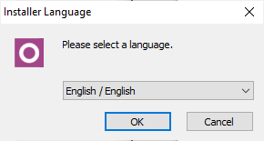
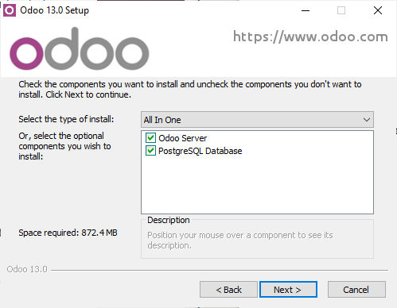
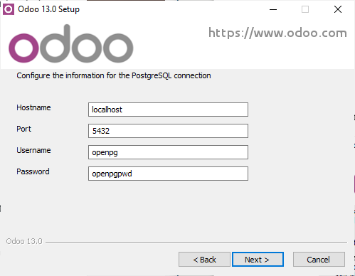
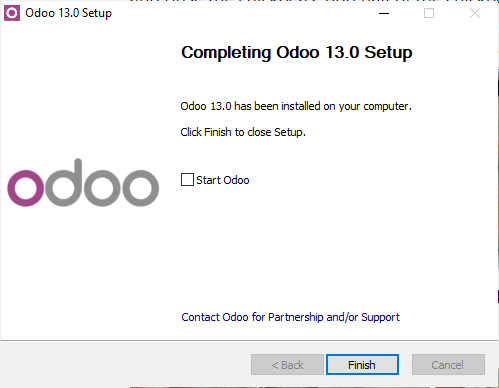

Descripción y resumen
Viene del ingles Enterprise Resource Planning, "Sistema de planificación de recursos empresariales" en español. Y se dedican no solo a las operaciones de producción y distribución sino que incluso de los recursos humanos.
Automatiza los procesos de la empresa, y unifica toda la informaciñon de la misma en un unico programa lo que ahorra tiempo espacio y complicaciones; lo que al final se traduce en dinero.
Pueden ser bien fisicos en un servidor comprado y mantenido por la empresa lo cual puede causar inconvenientes por el tiempo que tarda su instalacion y la preparacion de la infraestructura, pero existe la alternativa de usar servidores en la propia nube, que solo requieren de conexión a internet.
El principal inconveniente de los ERP es el costo de las licencias y el pago regular que mantener los mismos requieren.
Instalación y configuración.
- Idioma y terminos de servicio, elige el idioma que quieras y acepta las condiciones. 
- Ahora nos va a dar la eleccion de crear solo el servidor, solo la base de datos, o ambos, nosotros vamos a seleccionar ambos. 
- Ahora podemos definir el nombre del servidor ademas de el usuario y contraseña del administrador. 
- Ahora instalará todo los archivos necesarios para el funcionamiento cuando la barra se llene, pulsa siguiente y finalizar para que el programa se ejecute. 